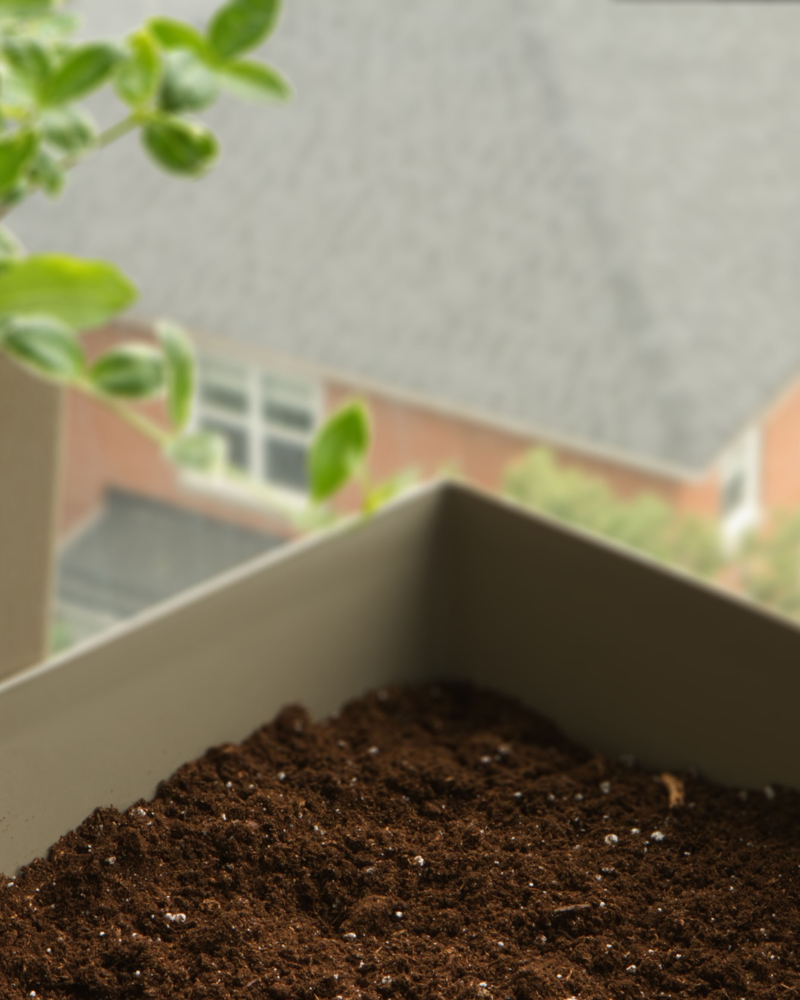
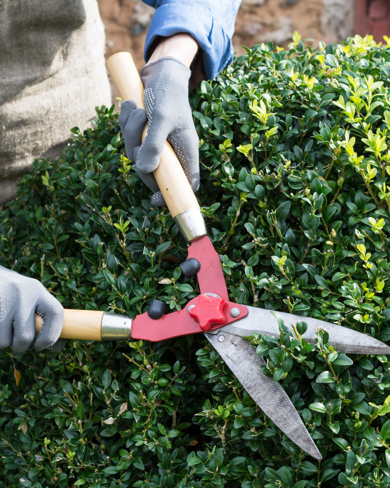
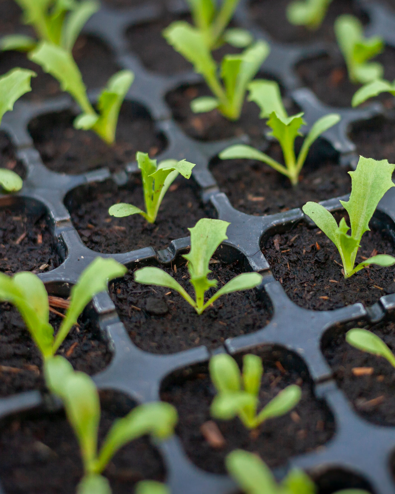
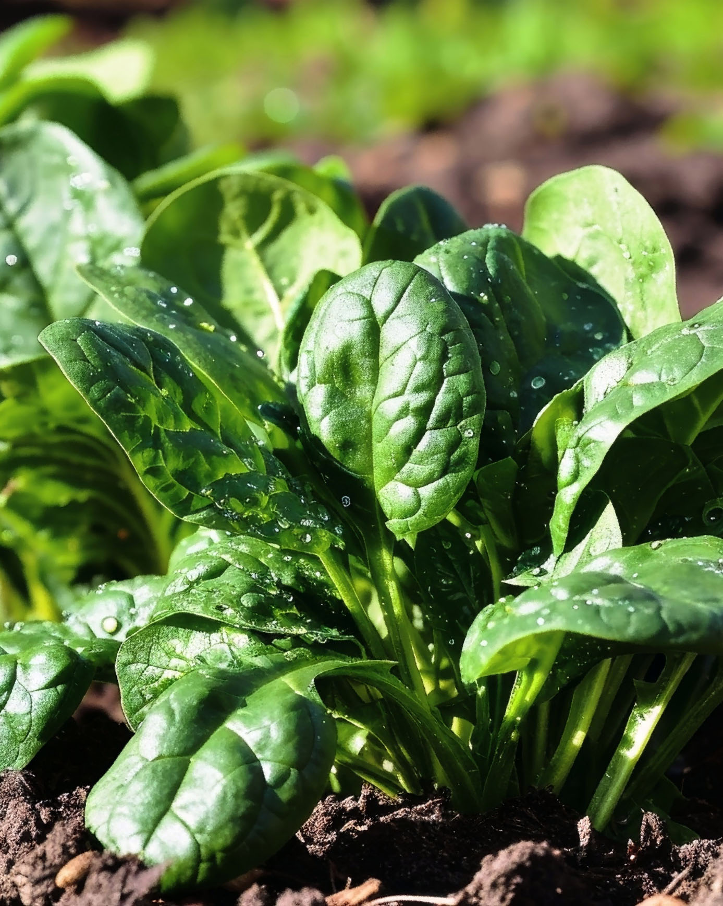
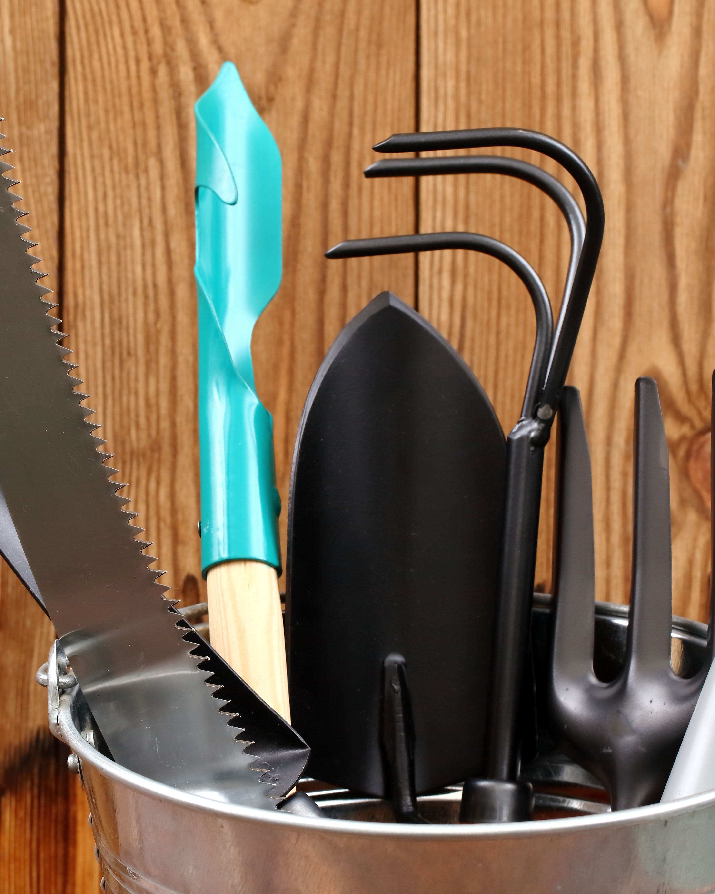
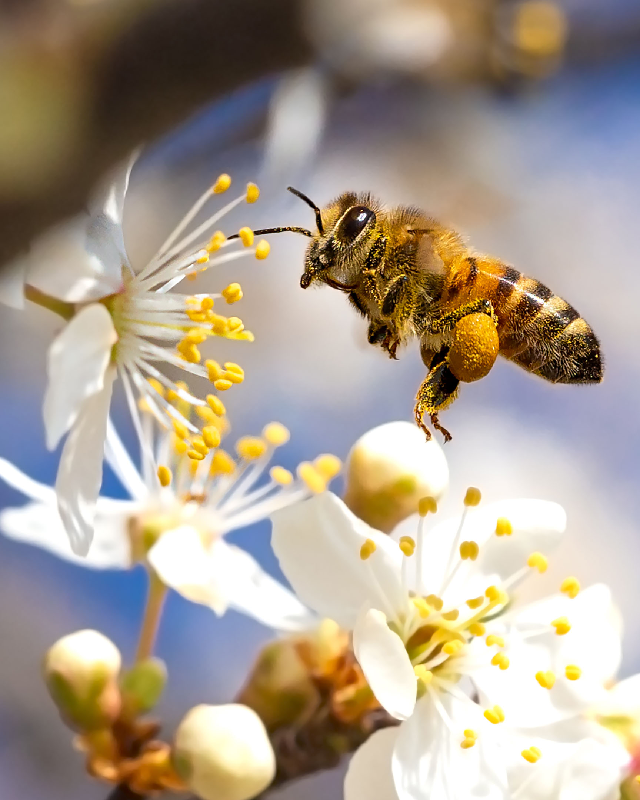

Your message has been sent. Thank you!
Your message has been sent.
Thank you!
Vancouver's March Gardening Checklist
Spring is here, and March is the perfect time to prep your garden for a thriving season! Vancouver’s mild climate lets you get started early. Here’s a concise checklist to guide you:

1. Prep Your Soil
Loosen soil with a garden fork or tiller to improve drainage.
Enrich with compost or organic matter for healthier plants.

2. Prune Shrubs and Trees
Trim roses, hydrangeas, and fruit trees to encourage new growth.
Remove dead or damaged branches from evergreens.

3. Start Seeds Indoors
Sow tomatoes, peppers, and herbs like basil for a head start.
Use seed-starting mix and provide plenty of light.

4. Plant Cool-Season Crops
Direct sow peas, spinach, kale, and lettuce outdoors.
Protect young plants with row covers if frost is forecasted.
5. Weed and Mulch
Remove weeds early to prevent them from taking over.
Apply mulch to suppress weeds and retain soil moisture.
6. Divide Perennials
Split overcrowded hostas, daylilies, and ornamental grasses.
Replant divisions to refresh your garden or share with friends.

7. Clean Garden Tools
Sharpen blades and oil moving parts to keep tools in top shape.
Organize supplies for easy access during the busy season.

8. Support Pollinators
Plant early bloomers like crocuses and red-flowering currant to feed bees.
With these tasks checked off, your garden will be ready to flourish this spring!